Forlinx Desktop 22.04_User’s Manual_V1.1
Copyright
The copyright of this manual belongs to Baoding Folinx Embedded Technology Co., Ltd. Without the written permission of our company, no organizations or individuals have the right to copy, distribute, or reproduce any part of this manual in any form, and violators will be held legally responsible.
Forlinx adheres to copyrights of all graphics and texts used in all publications in original or license-free forms.
The drivers and utilities used for the components are subject to the copyrights of the respective manufacturers. The license conditions of the respective manufacturer are to be adhered to. Related license expenses for the operating system and applications should be calculated/declared separately by the related party or its representatives.
Revision History
Date |
SoM Version |
Carrier Board Version |
Manual Version |
Revision History |
|---|---|---|---|---|
28/02/2025 |
V1.0 |
V1.0 and above |
V1.0 |
OK3568-C Forlinx Desktop 22.04_User’s Manual Initial Version |
20/10/2025 |
V1.0 |
V1.0 and above |
V1.1 |
Adding notes in the WiFi test chapter and the quick startup chapter (the antenna must be connected for startup, otherwise the startup may be affected). |
Overview
This manual is designed to help you quickly familiarize yourselves with the product, and understand the interface functions and testing methods. It primarily covers the testing of interface functions on the development board, the methods for flashing images, and troubleshooting procedures for common issues encountered in use. In the process of testing, some commands are annotated to facilitate the user’s understanding, mainly for practical use. Please refer to OK3568-C _ Forlinx Desktop 22.04 User‘s Compilation Manual provided by Forlinx for kernel compilation, related application compilation methods, and development environment setup.
This manual is mainly divided into five chapters:
● Chapter 1 mainly provides an overall overview of the product, briefly introducing the interface resources of the development board, the relevant driver paths in the kernel source code, and explanations of the key parts in the documentation;
● Chapter 2 mainly focuses on the quick startup of the product, which can be achieved through two methods: serial port login and network login;
● Chapter 3 mainly introduces the usage functions of the product;
● Chapter 4 mainly conducts usage tests on functions such as audio, video, and camera of the product;
● Chapter 5 mainly deals with the image update of the product, mainly describing the methods of updating the image to the storage device. You can choose the corresponding flashing method according to the actual situation.
A description of some of the symbols and formats associated with this manual:
Format |
Meaning |
|---|---|
Note |
Note or information that requires special attention, be sure to read carefully. |
📚 |
Relevant notes on the test chapters. |
️🛤️ |
Indicates the related path. |
Blue font on gray background |
Refers to commands entered at the command line (Manual input required). |
Black font |
Serial port output message after entering a command |
Bold black |
Key information in the serial port output message |
// |
Interpretation of input instructions or output information |
Username@Hostname |
root@ok3568: development board serial port login account information; |
After packaging the file system, you can use the “ls” command to view the generated files.
forlinx@ubuntu:~/3568$ ls //List the files in this directory
OK3568-linux-source OK3568-linux-source.tar.bz2
forlinx@ubuntu: the username is forlinx and the hostname is ubuntu, indicating that the operation is performed in the development environment ubuntu;
// : Explanatory notes for operation instructions, no need to input;
ls: Blue text on a gray background indicates relevant commands that need to be manually input;
OK3568 - linux - source: Black text on the bottom is the output information after entering the command. Bold text is the key information, here it is the packaged file system.
1. OK3568-C Development Board Description
RK3568 is a low-power high-performance processor based on ARM64 architecture. It includes 4-core Cortex-A55 and independent NEON co-processor and neural network plus processor NPU. It can be applied to computers, mobile phones, personal mobile Internet and digital multimedia devices.
The connection between SoM and the carrier board is board-to-board, and the main interfaces are shown as follows:
 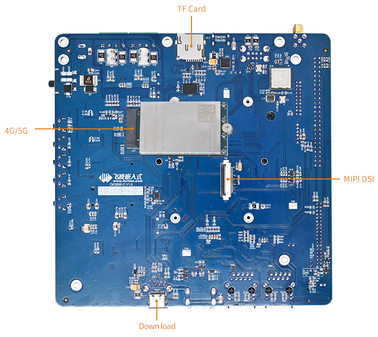
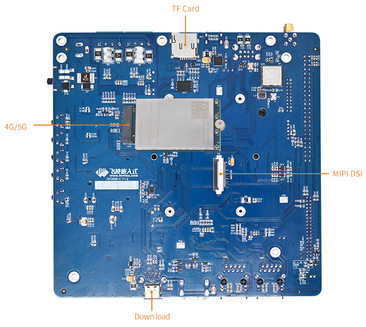
Note:
Hardware parameters are not described in this software manual. Before referring to this manual for software development, please read the “OK3568-C Hardware Manual” under the “Hardware Data \ Manual” path to understand the product naming rules and the hardware configuration information of the product you use, which is helpful for you to use this product.
1.1 Linux 5.10.160 System Software Resources Features
Device |
Location of driver source code in the kernel |
Device Name |
|---|---|---|
LCD Backlight Driver |
drivers/video/backlight/pwm_bl.c |
/sys/class/backlight |
USB Port |
drivers/usb/storage/ |
|
USB Mouse |
drivers/hid/usbhid/ |
/dev/input/mice |
Ethernet |
drivers/net/ethernet/stmicro/stmmac |
|
SD/micro TF card driver |
drivers/mmc/host/dw_mmc-rockchip.c |
/dev/block/mmcblk1pX |
EMMC Driver |
drivers/mmc/host/dw_mmc-rockchip.c |
/dev/block/mmcblk2pX |
OV13850 |
drivers/media/i2c/ov13850.c |
/dev/videoX |
LCD Controller |
drivers/gpu/drm/rockchip/rockchip_drm_vop.c |
|
MIPI CSI |
drivers/phy/rockchip/phy-rockchip-mipi-rx.c |
|
MIPI DSI |
drivers/phy/rockchip/phy-rockchip-inno-mipi-dphy.c |
|
LCD Touch Driver |
drivers/input/touchscreen/gt9xx/* drivers/input/touchscreen/edt-ft5x06.c |
/dev/input/eventX |
RTC Real Time Clock Driver |
drivers/rtc/rtc-rx8010.c drivers/rtc/rtc-pcf8563.c |
/dev/rtc0 |
serial port |
drivers/tty/serial/8250/8250_dw.c |
/dev/ttySX |
Key Driver |
drivers/input/keyboard/adc-keys.c |
/dev/input/eventX |
LED |
drivers/leds/leds-gpio.c |
|
I2S |
sound/soc/rockchip/rockchip_i2s.c |
|
Audio Driver |
sound/soc/codecs/rk817_codec.c |
/dev/snd/ |
PMIC |
drivers/mfd/rk808.c |
|
PCIE |
drivers/pci/controller/pcie-rockchip.c |
|
Watchdog |
drivers/watchdog/dw_wdt.c |
|
SPI |
drivers/spi/spi-rockchip.c |
1.2 EMMC Memory Partition Table
The following table is the eMMC memory partition information for the Forlinx Desktop operating system (a block size of 512 bits is calculated):
Partition Index |
Name |
Offset/Block |
Size/Block |
Content |
|---|---|---|---|---|
N/A |
loader |
0x00000000 |
0x00003fc0 |
MiniLoaderAll.bin |
1 |
uboot |
0x00004000 |
0x00002000 |
uboot.img |
2 |
misc |
0x00006000 |
0x00002000 |
misc.img |
3 |
boot |
0x00008000 |
0x00020000 |
boot.img |
4 |
recovery |
0x00028000 |
0x00040000 |
recovery.img |
5 |
backup |
0x00068000 |
0x00010000 |
backup.img |
6 |
rootfs |
0x00078000 |
0x01800000 |
rootfs.img |
7 |
oem |
0x01878000 |
0x00040000 |
oem.img |
8 |
userdata |
0x018b8000 |
Remaining total |
userdata.img |
The partition size can be viewed on the development board using the fdisk -l command:
forlinx@ok3568:~$ sudo fdisk -l
Disk /dev/ram0: 4 MiB, 4194304 bytes, 8192 sectors
Units: sectors of 1 * 512 = 512 bytes
Sector size (logical/physical): 512 bytes / 4096 bytes
I/O size (minimum/optimal): 4096 bytes / 4096 bytes
Disk /dev/mmcblk0: 28.91 GiB, 31037849600 bytes, 60620800 sectors
Units: sectors of 1 * 512 = 512 bytes
Sector size (logical/physical): 512 bytes / 512 bytes
I/O size (minimum/optimal): 512 bytes / 512 bytes
Disk label type: gpt
Disk identifier: A0500000-0000-4954-8000-6CC7000054F2
Device Start End Sectors Size Type
/dev/mmcblk0p1 16384 24575 8192 4M 未知
/dev/mmcblk0p2 24576 32767 8192 4M 未知
/dev/mmcblk0p3 32768 163839 131072 64M 未知
/dev/mmcblk0p4 163840 425983 262144 128M 未知
/dev/mmcblk0p5 425984 491519 65536 32M 未知
/dev/mmcblk0p6 491520 25657343 25165824 12G 未知
/dev/mmcblk0p7 25657344 25919487 262144 128M 未知
/dev/mmcblk0p8 25919488 60620735 34701248 16.5G 未知
2. Fast Startup
2.1 Preparation Before Startup
12V2A or 12V3A DC Power Cable
Debugging serial cable The debugging serial port on the development board is a Micro USB connector, and users can connect the development board to a PC using a USB to Micro cable to view the status of the development board.
Note: Be sure to install the WiFi antenna when startup.

2.2 Debugging Serial Driver Installation
The debugging serial port of the OK3568-C - C platform uses a Type - C interface. There is an on - board USB to UART chip, so there’s no need to purchase a USB to serial port debugging tool. It is extremely simple and convenient to use.
To install the driver, please use the driver package CP210x _ VCP _ Windows _ XP _ Vista. Zip provided in the \ Linux \ Tools \ directory of the user profile.
Select to run CP210xVCPInstaller _ x86.exe for 32-bit operating system and CP210xVCPInstaller _ x64.exe for 64-bit operating system after decompression.
2.3 Serial Port Login
2.3.1 Serial Port Connection Settings
Note:
Serial terminal login for Forlinx users:
User’s name: forlinx
Password: forlinx
Serial terminal login root user: account: root, password: root;
Serial port settings: Baud rate 115200, 8 data bits, 1 stop bit, no parity bit, no flow control;
Hardware Requirements: Type-C cable required to connect PC and development boards;
Software Requirements: PC Windows system needs to install the super terminal software;
Because the terminal software has many types, users can choose their familiar one.
In the following, we take the putty terminal software as an example to introduce the serial port login method:
Step 1: Connect the serial port number of the computer—check the serial port number from the device manager (Based on the port actually recognized by the computer );

Step 2: Open and set up putty, then set the“ line according to the COM port of the computer used, baud rate 115200;

Step 3: After the setting, input the COM port used by the computer in Saved Sessions. The following figure takes COM3 as an example, save the settings, open the serial port again later, and click on the saved port number;

2.3.2 Serial Port Login
After the terminal software on the PC side is set, connect the PC and the development board through the serial port cable, and power on after connecting the power supply. The startup information can be seen through the terminal software.
The following startup message indicates a successful start, allowing a new command line to be entered by pressing Enter:

The current Forlinx Desktop system users:
User’s name |
forlinx |
root |
|---|---|---|
Password |
forlinx |
root |
Note: If the message shows [root@buildroot]#, it indicates the first reboot after the initial firmware burn. At this point, do not perform any operations; wait for it to reboot automatically. forlinx login: is the normal state.
2.4 Network Login
In addition to logging in via the debugging serial port, the OK3568 supports SSH network login to the development board and also supports FTP file transfer. The following example uses an IP address of 192.168.0.123 for the development board to illustrate the use of network tools. To modify the network IP, use the command “ifconfig eth0 192.168.0.123”. The development board and PC should be connected to the same switch or directly connected via an Ethernet cable.
2.4.1 SSH
OK3568 development board supports SSH service and automatically starts it during boot up. After setting the IP address, the board can be used as an SSH server. You can log in to the development board via SSH for development and debugging, as well as use scp for file transfer.
Note:
When logging in follow the prompts to enter the username “forlinx” password “forlinx”. SSH cannot log in root user temporarily;
The following is tested with the development board ip 192.168.0.123, please change it according to the actual situation, and use ifconfig eth0 192.168.0.123 to change it in the debugging serial port terminal.

2.4.2 FTP
OK3568 development board supports FTP service and automatically starts when powered on. Once you’ve set the IP address, it can be used as an FTP server. The following describes how to utilize the FTP tool for file transfer.
Path: OK3568-C ForlinxDesktop User Profile\Tool\FileZilla*
Install FileZilla tool on Windows and follow the steps shown in the image below to set it up.
Note:
This function needs to connect a network cable to the development board, set the host IP to be in the same network segment as the client, make sure the host and the client are in the same LAN, user name “forlinx”, password “forlinx”, you can upload/download operations after successful login;
The following is tested with the development board ip 192.168.0.123, please change it according to the actual situation, and use ifconfig eth0 192.168.0.123 to change it in the debugging serial port terminal.


2.5 Screen Switching
OK3568 supports multiple screen interfaces such as LVDS/LCD, MIPI DSI/eDP, and HDMI. It also allows for mirroring and extended display on up to three screens simultaneously. Currently there are two methods for controlling screen switching: specifying through the device tree in the kernel and dynamically controlling through the Uboot menu.
Note: Screen switching involves touch switching. The factory image defaults to outputting video display on LVDS, MIPI, and HDMI interfaces simultaneously, with touch functionality on LVDS screen. If using MIPI touch, please turn off LVDS screen output during the screen selection process.
2.5.2 Kernel Device Tree Specification
This method does not require the connection of a serial terminal, and the system image defaults to the desired configuration selection, which is suitable for mass production. However, we need to manually modify the device tree and regenerate the system image once again
Note: This method has higher priority than the uboot screen selection, and the uboot selection will not take effect after the device tree is modified.
The device tree path :kernel/arch/arm64/boot/dts/rockchip/OK3568-C-common.dtsi
In the kernel source code, open the device dtsi file and find the following node:

The node has a default disabled state and needs to be changed to an okay enabled node. Change according to screen requirements.
Examples:
Close the hdmi, lvds screens, change the attribute to “off”, and use edp to change the corresponding attribute to edp.

After saving, recompile to generate the image.
There are many types of MIPI screens, and the existing timing and control words may not meet the requirements, so it is necessary to change the display-timings under the dsi node. However, any node status attribute related to display is handled by default, and the program will automatically control it.
2.6 System Shutdown
In general, the power can be turned off directly, if there is data storage, function use and other operations, do not arbitrarily disconnect the power during the operation, in order to prevent irreversible damage to the file, you can only re-burn the firmware. To ensure that data is not completely written, enter the sync command to complete data synchronization before turning off the power.
Note: If the user-designed product using the SoM experiences an unexpected shutdown due to power loss during operation, power-down protection measures can be included in the design to prevent this issue.
3. OK3568 Platform Function Test
3.1 Interface Function Test
3.1.1 Introduction to Interface Functions
After the development board is started for the first time, you need to enter the login password and click login. The login user is forlinx, and the password is forlinx. After entering the desktop, it is as follows:
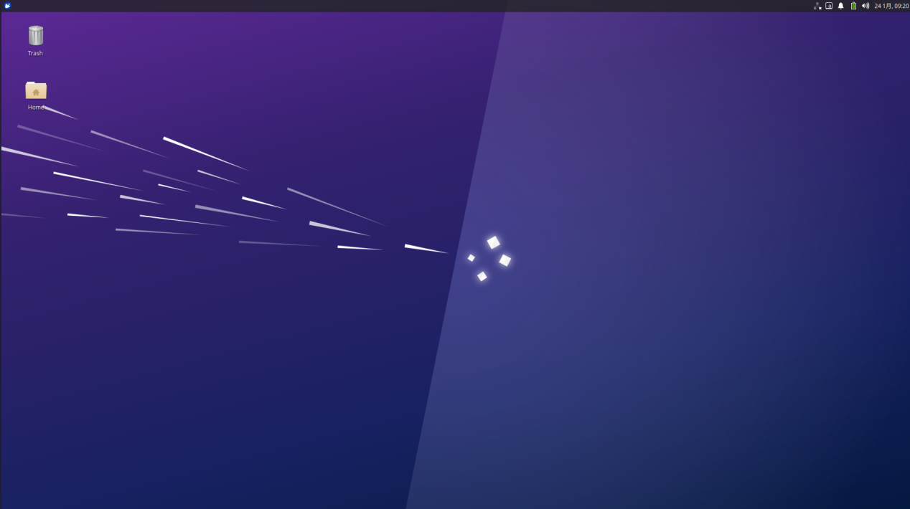
3.1.2 Virtual Keyboard Settings
The system integrates a virtual keyboard. Click the icon in the upper corner and move the mouse to the virtual keyboard option to select the virtual keyboard.

After selection, the virtual keyboard will pop up in the page.

3.1.3 WiFi Test
Note: Be sure to install the WiFi antenna when startup.
The OK3568 platform has the AW-CM358 module on board by default, which is an all-in-one WiFi/Bluetooth module to test the WiFi functionality. The WiFi module will exist in the system as a mlan node; this test corresponds to mlan0 (other corresponding nodes are used for multiple devices). To configure WiFi, use the mouse to click the network icon in the upper right corner:
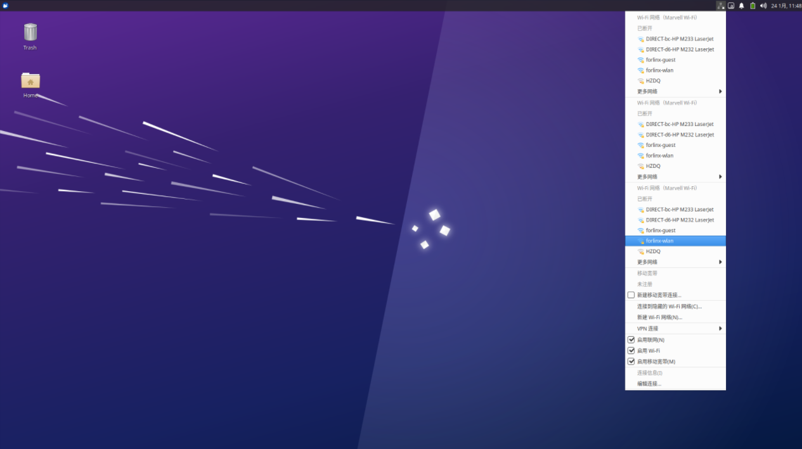
Click the WiFi name listed under the WiFi network, pop up the WiFi configuration interface, and enter the password:
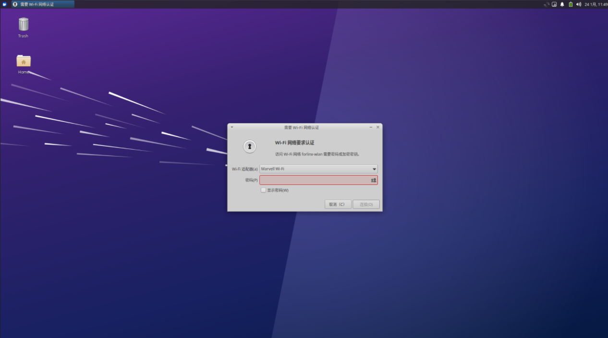
Click “Connect” and the WiFi connection is completed:

3.1.4 Browser Test
ForlinxDesktop integrates Google Chrome, etc. When using it, please make sure the network is smooth and dns is available before accessing the external network. Click on the Start menu in the lower left corner and select “Chromium Browser”:
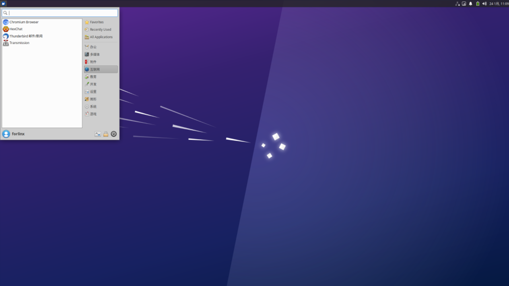
Enter the browser:

Click the search box to enter the website and visit the official website of Forlinx Embedded. The interface is as follows:

3.1.5 Bluetooth Test
OK3568 platform is equipped with AW-CM358 module by default, which is a WiFi/Bluetooth integrated module to test Bluetooth function. To configure Bluetooth, you need to right-click the Bluetooth icon in the lower right corner. Bluetooth is enabled by default:

Select “Send Files to Device” and select the corresponding file:
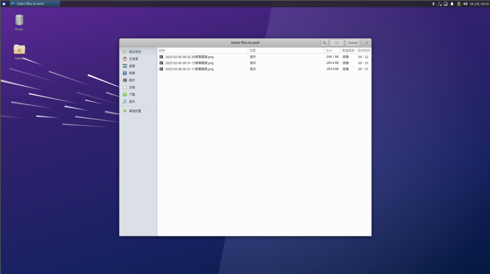
Click “OK” to select the corresponding equipment:

After clicking “OK”, the file transfer starts:
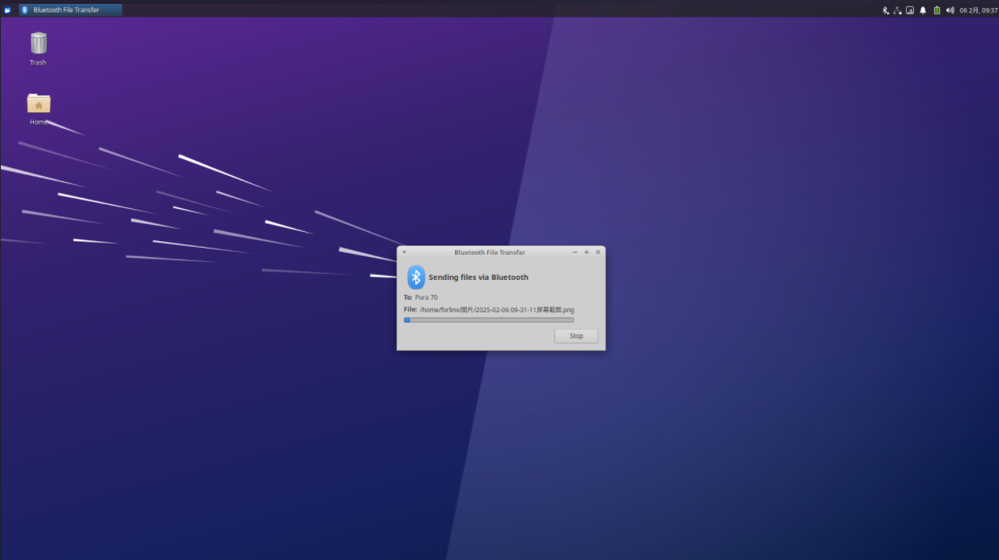
3.1.6 File Manager
Click Home on the desktop to manage files:

3.2 Command Line Function Test
The OK3568 platform has various built-in command line tools available to users.
3.2.1 System Information Queries
To view kernel and CPU information:
forlinx@ok3568:~$ uname -a
Linux ok3568 5.10.160 #1 SMP Mon Jan 6 12:32:39 CST 2025 aarch64 aarch64 aarch64 GNU/Linux
View operating system information:
forlinx@ok3568:~$ cat /etc/issue
Ubuntu 22.04.5 LTS \n \l
View environment variable information:
forlinx@ok3568:~$ env
SHELL=/bin/bash
GST_GL_PLATFORM=egl
COGL_DRIVER=gles2
LANGUAGE=zh_CN:zh:en_US:en
PWD=/home/forlinx
LOGNAME=forlinx
XDG_SESSION_TYPE=tty
SYSTEMD_EXEC_PID=874
TZ=Asia/Shanghai
MOTD_SHOWN=pam
HOME=/home/forlinx
LANG=zh_CN.UTF-8
ADB_TCP_PORT=5555
LS_COLORS=rs=0:di=01;34:ln=01;36:mh=00:pi=40;33:so=01;35:do=01;35:bd=40;33;01:cd=40;33;01:or=40;31;01:mi=00:su=37;41:sg=30;43:ca=30;41:tw=30;42:ow=34;42:st=37;44:ex=01;32:*.tar=01;31:*.tgz=01;31:*.arc=01;31:*.arj=01;31:*.taz=01;31:*.lha=01;31:*.lz4=01;31:*.lzh=01;31:*.lzma=01;31:*.tlz=01;31:*.txz=01;31:*.tzo=01;31:*.t7z=01;31:*.zip=01;31:*.z=01;31:*.dz=01;31:*.gz=01;31:*.lrz=01;31:*.lz=01;31:*.lzo=01;31:*.xz=01;31:*.zst=01;31:*.tzst=01;31:*.bz2=01;31:*.bz=01;31:*.tbz=01;31:*.tbz2=01;31:*.tz=01;31:*.deb=01;31:*.rpm=01;31:*.jar=01;31:*.war=01;31:*.ear=01;31:*.sar=01;31:*.rar=01;31:*.alz=01;31:*.ace=01;31:*.zoo=01;31:*.cpio=01;31:*.7z=01;31:*.rz=01;31:*.cab=01;31:*.wim=01;31:*.swm=01;31:*.dwm=01;31:*.esd=01;31:*.jpg=01;35:*.jpeg=01;35:*.mjpg=01;35:*.mjpeg=01;35:*.gif=01;35:*.bmp=01;35:*.pbm=01;35:*.pgm=01;35:*.ppm=01;35:*.tga=01;35:*.xbm=01;35:*.xpm=01;35:*.tif=01;35:*.tiff=01;35:*.png=01;35:*.svg=01;35:*.svgz=01;35:*.mng=01;35:*.pcx=01;35:*.mov=01;35:*.mpg=01;35:*.mpeg=01;35:*.m2v=01;35:*.mkv=01;35:*.webm=01;35:*.webp=01;35:*.ogm=01;35:*.mp4=01;35:*.m4v=01;35:*.mp4v=01;35:*.vob=01;35:*.qt=01;35:*.nuv=01;35:*.wmv=01;35:*.asf=01;35:*.rm=01;35:*.rmvb=01;35:*.flc=01;35:*.avi=01;35:*.fli=01;35:*.flv=01;35:*.gl=01;35:*.dl=01;35:*.xcf=01;35:*.xwd=01;35:*.yuv=01;35:*.cgm=01;35:*.emf=01;35:*.ogv=01;35:*.ogx=01;35:*.aac=00;36:*.au=00;36:*.flac=00;36:*.m4a=00;36:*.mid=00;36:*.midi=00;36:*.mka=00;36:*.mp3=00;36:*.mpc=00;36:*.ogg=00;36:*.ra=00;36:*.wav=00;36:*.oga=00;36:*.opus=00;36:*.spx=00;36:*.xspf=00;36:
INVOCATION_ID=dcc11a9a3efe4625b17925b2bbca2846
QT_XCB_GL_INTEGRATION=xcb_egl
XDG_SESSION_CLASS=user
TERM=xterm-color
USER=forlinx
ADBD_SHELL=/bin/bash
DISPLAY=:0
SHLVL=1
GST_GL_API=gles2
XDG_SESSION_ID=c2
XDG_RUNTIME_DIR=/run/user/1000
LC_ALL=zh_CN.UTF-8
JOURNAL_STREAM=7:26625
XDG_DATA_DIRS=/usr/share/gnome:/usr/local/share:/usr/share:/var/lib/snapd/desktop
HUSHLOGIN=FALSE
PATH=/usr/local/sbin:/usr/local/bin:/usr/sbin:/usr/bin:/sbin:/bin:/usr/games:/usr/local/games:/snap/bin
QTWEBENGINE_CHROMIUM_FLAGS=--no-sandbox --disable-es3-gl-context --ignore-gpu-blacklist --ignore-gpu-blocklist --enable-accelerated-video-decode
DBUS_SESSION_BUS_ADDRESS=unix:path=/run/user/1000/bus
MAIL=/var/mail/forlinx
_=/usr/bin/env
3.2.2 FM Test
Note: This process requires the root user. Take cpu0 as an example. The actual processes cpu1, cpu2, and cpu3 will change at the same time.
All cpufreq governor types supported in the current kernel:
root@ok3568:~# cat /sys/devices/system/cpu/cpu0/cpufreq/scaling_available_governors
interactive conservative ondemand userspace powersave performance schedutil
The userspace indicates user mode, in which other users’ programs can adjust the CPU frequency.
To view the frequency gear supported by the current CPU
root@ok3568:~# cat /sys/devices/system/cpu/cpu0/cpufreq/scaling_available_frequencies
408000 600000 816000 1104000 1416000 1608000 1800000 1992000
Set to user mode and modify the frequency to 1800000:
root@ok3568:~# echo userspace > /sys/devices/system/cpu/cpu0/cpufreq/scaling_governor
root@ok3568:~# echo 1800000 > /sys/devices/system/cpu/cpu0/cpufreq/scaling_setspeed
View the modified current frequency:
root@ok3568:~# cat /sys/devices/system/cpu/cpu0/cpufreq/cpuinfo_cur_freq
1800000
3.2.3 Temperature Test
View the temperature value:
root@ok3568:~# cat /sys/class/thermal/thermal_zone0/temp
47777
The temperature value is 47°C.
3.2.4 Key Test

Use the keytest command line tool to test the keys. At present, keytest supports the test of the four keys V +, V-, Home and ESC on the backplane, and the key codes are 115, 114, 139 and 158 respectively. At this point, press the lift button in sequence, and the following can be output on the terminal:
Execute the following command:
forlinx@ok3568:~$ sudo fltest_keytest
Available devices:
/dev/input/event8: adc-keys
key115 Presse
key115 Released
key114 Presse
key114 Released
key139 Presse
key139 Released
key158 Presse
key158 Released
3.2.5 Serial Port Test
OK3568 serial port supports odd and even parity, 8 data bits and 1 stop bit.
Please short the serial port to be tested before the serial port loopback test. In the schematic diagram of the OK3568 platform, UART2, UART3, UART4, UART5, and UART8 are indicated as 5 serial ports, with UART2 being the debug port and UART8 being the Bluetooth port. The serial ports available to the user are UART3, UART4 and UART5, and the corresponding device names in the development board are ttyS3, ttyS4 and ttyS5. Take the test of UART4 serial port as an example, short-circuit the receiving and transmitting pins of UART4 according to the schematic diagram of the development board, corresponding to PIN29 and PIN30 respectively.
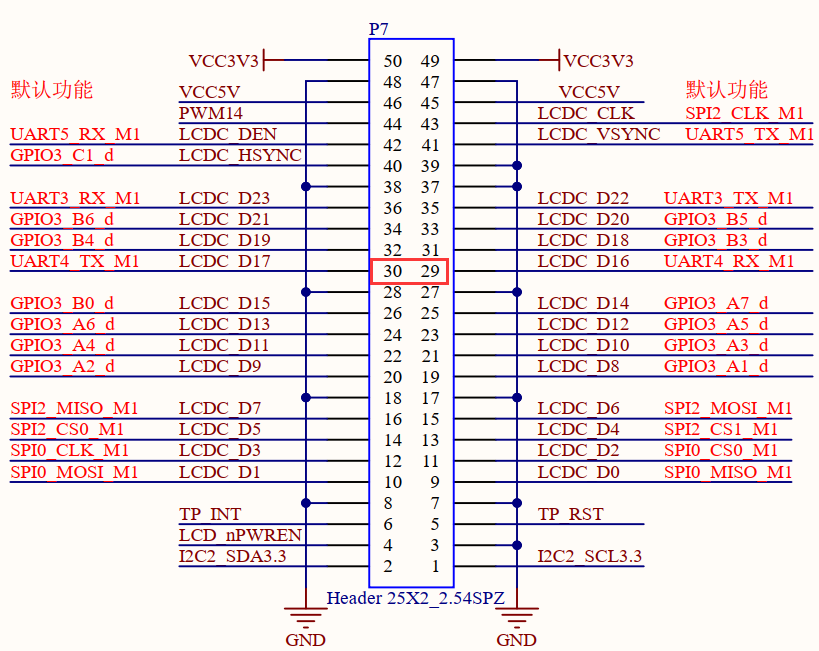
Turn on the test program after the short circuit is completed.
forlinx@ok3568:~$ sudo fltest_uarttest -d /dev/ttyS4
Welcome to uart test
Send test data:
forlinx_uart_test.1234567890...
Read Test Data finished,Read:
forlinx_uart_test.1234567890...
If the serial port prints the above content after execution, it indicates that the serial port communication is basically normal.
3.2.6 SPI Test
2 x SPI interfaces are led out from the OK3568 carrier board, which are configured as spidev in the default software for loopback test. When testing, refer to the schematic for shorting MOSI (PIN15) and MISO (PIN16), and then use the commands below to test each.

Without shorting the SPI 2_ MOSI and the SPI 2_ MISO, execute the test command:
forlinx@ok3568:~$ sudo fltest_spidev_test -D /dev/spidev2.0
spi mode: 0
bits per word: 8
max speed: 500000 Hz (500 KHz)
FF FF FF FF FF FF
FF FF FF FF FF FF
FF FF FF FF FF FF
FF FF FF FF FF FF
FF FF FF FF FF FF
FF FF FF FF FF FF
FF FF
Short circuit the SPI 2_ MOSI to the SPI 2_ MISO and execute the test command:
forlinx@ok3568:~$ sudo fltest_spidev_test -D /dev/spidev2.0
spi mode: 0
bits per word: 8
max speed: 500000 Hz (500 KHz)
FF FF FF FF FF FF
40 00 00 00 00 95
FF FF FF FF FF FF
FF FF FF FF FF FF
FF FF FF FF FF FF
DE AD BE EF BA AD
F0 0D
3.2.7 Watchdog Test
Watchdog is a function often used in embedded systems. The device node of watchdog in OK3568 is/dev/watchdog. This test provides two test procedures, and the user can choose one of them to test according to the actual situation.
1. Start fltest_watchdog, set the charm to time 10s, and feed the dog regularly.
forlinx@ok3568:~$ sudo fltest_watchdog
Watchdog Ticking Away!
This command turns on the watchdog and performs a feed, so the system does not reboot.
Note: When ctrl + C is used to end the test program, the system will reset after 10 seconds. If you do not want to reset, please input within 10 seconds after ctrl + C:
forlinx@ok3568:~$ sudo fltest_watchdog -d
Watchdog card disabled. //Turn off watchdog
2. Start fltest_watchdogrestart, set the reset time to 10s without feeding the dog.
forlinx@ok3568:~$ sudo fltest_watchdogrestart
Restart after 10 seconds
This command turns on the watchdog, but does not feed the dog, and the system reboots after 10 seconds.
3.2.8 RTC Function Test
RTC testing is mainly done by using the date and hwclock tools to set the software and hardware time. The test checks if the software clock can read and synchronize with the RTC clock when the development board is powered off and on again (Note: Make sure that the button battery is already installed on the board).

forlinx@ok3568:~$ sudo systemctl enable hwclock.sh
The hwclock.sh.service is not a native systemd service. Redirecting to systemd - sysv - install.
Executing: /lib/systemd/systemd - sysv - install enable hwclock.sh
forlinx@ok3568:~$ sudo date -s "2025-01-21 11:11:00" // Set the time
Tuesday, January 21, 2025 11:11:00 CST
forlinx@ok3568:~$ date // Read the time
Tuesday, January 21, 2025 11:11:20 CST
forlinx@ok3568:~$ sudo hwclock -wu // Write the system time to the RTC
forlinx@ok3568:~$ sudo hwclock --show // Check the hardware time
2025-01-21 11:11:52.070708+08:00
// Restart the development board. After entering the system, read the system time to check if it is the same as the set time.
forlinx@ok3568:~$ date
Tuesday, January 21, 2025 11:12:38 CST
3.2.9 USB Mouse Test
Connect the USB mouse to the USB interface of the OK3568 platform, and enter the dmesg command at the serial port terminal to view the following printed information:
[ 610.509334] usb 5-1: new low-speed USB device number 3 using xhci-hcd
[ 610.653883] usb 5-1: New USB device found, idVendor=1c4f, idProduct=0034, bcdDevice= 1.10
[ 610.653900] usb 5-1: New USB device strings: Mfr=1, Product=2, SerialNumber=0
[ 610.653904] usb 5-1: Product: Usb Mouse
[ 610.653907] usb 5-1: Manufacturer: SIGMACHIP
[ 610.676147] input: SIGMACHIP Usb Mouse as /devices/platform/usbdrd/fcc00000.dwc3/xhci-hcd.4.auto/usb5/5-1/5-1:1.0/0003:1C4F:0034.0004/input/input10
[ 610.733226] hid-generic 0003:1C4F:0034.0004: input,hidraw0: USB HID v1.10 Mouse [SIGMACHIP Usb Mouse] on usb-xhci-hcd.4.auto-1/input0
At this time, the arrow cursor appears on the screen, the mouse can work normally.
3.2.10 USB 2.0/USB3.0
OK3568 supports two USB 2.0 and one USB 3.0 interfaces. You can connect USB devices such as a mouse, keyboard, or USB flash drive to any of the onboard USB host interfaces. The board also supports hot-plugging for the mentioned devices. Demonstration with a mounting USB flash drive; the current USB flash drive test support up to 128G, but no test for 128G or above.

USB3.0 and OTG are multiplexed and can be switched using a DIP switch. Please make sure that the DIP switch is set to the ON position when using the USB3.0 interface.

The terminal prints information about the USB flash drive, and since many types of USB flash drives exist, the information displayed may vary:
Step 1: After the development board has started, connect the USB flash drive to the USB host interface on the development board.
Enter the dmesg command at the serial port terminal to view the following print information:
[ 267.785916] usb 6-1: new SuperSpeed Gen 1 USB device number 2 using xhci-hcd
[ 267.807484] usb 6-1: New USB device found, idVendor=05e3, idProduct=0749, bcdDevice=15.35
[ 267.807499] usb 6-1: New USB device strings: Mfr=3, Product=4, SerialNumber=5
[ 267.807502] usb 6-1: Product: USB3.0 Card Reader
[ 267.807506] usb 6-1: Manufacturer: Generic
[ 267.807509] usb 6-1: SerialNumber: 000000001536
[ 267.810131] usb-storage 6-1:1.0: USB Mass Storage device detected
[ 267.811382] usb-storage 6-1:1.0: Quirks match for vid 05e3 pid 0749: 420
[ 267.811826] scsi host0: usb-storage 6-1:1.0
[ 268.820704] scsi 0:0:0:0: Direct-Access Generic MassStorageClass 1536 PQ: 0 ANSI: 6
[ 269.129211] sd 0:0:0:0: [sda] 31116288 512-byte logical blocks: (15.9 GB/14.8 GiB)
[ 269.130009] sd 0:0:0:0: [sda] Write Protect is off
[ 269.130019] sd 0:0:0:0: [sda] Mode Sense: 21 00 00 00
[ 269.130852] sd 0:0:0:0: [sda] Write cache: disabled, read cache: enabled, doesn't support DPO or FUA
[ 269.160351] sda: sda1
[ 269.164415] sd 0:0:0:0: [sda] Attached SCSI removable disk
[ 269.708088] FAT-fs (sda1): utf8 is not a recommended IO charset for FAT filesystems, filesystem will be case sensitive!
Step 2: View the mount directory
forlinx@ok3568:~$ ls /run/media/
sda1 //sda1 is the first USB storage device inserted, and so on
Step 3: View the contents of the USB flash disk:
forlinx@ok3568:~$ sudo ls /run/media/sda1/ -l
总计 32
drwxrwx--- 2 root disk 32768 1月 10 18:00 'System Volume Information'
Write test:
forlinx@ok3568:~$ sudo dd if=/dev/zero of=/run/media/sda1/test bs=1M count=50 conv=fsync
50+0 records in
50+0 records out
52428800 bytes (52 MB, 50 MiB) copied, 2.7815 s, 18.8 MB/s // The write speed is limited by the specific storage device.
Read test：
Note: To ensure the accuracy of the data, please restart the development board to test the reading speed.
forlinx@ok3568:~$ sudo dd if=/run/media/sda1/test of=/dev/null bs=1M
50+0 records in
50+0 records out
52428800 bytes (52 MB, 50 MiB) copied, 0.797369 s, 65.8 MB/
3.2.11 Screen Backlight Adjustment
Backlight level range (0–255), maximum level 255, 0 indicating turn off. Log in as the root user after entering the system, and enter the following command at the terminal to perform the backlight test
1. View the current screen backlight values:
root@ok3568:~# cat /sys/class/backlight/lvds-backlight/brightness // Check the backlight value of the LVDS screen
200
root@ok3568:~# cat /sys/class/backlight/dsi1-backlight/brightness // Check the backlight value of the DSI screen
200
root@ok3568:~# cat /sys/class/backlight/edp-backlight/brightness // Check the backlight value of the EDP screen
200
2. Backlight is off:
root@ok3568:~# echo 0 > /sys/class/backlight/lvds-backlight/brightness // Turn off the backlight of the LVDS screen
root@ok3568:~# echo 0 > /sys/class/backlight/dsi1-backlight/brightness // Turn off the backlight of the DSI screen
root@ok3568:~# echo 0 > /sys/class/backlight/edp-backlight/brightness // Turn off the backlight of the EDP screen
3. LCD backlight is on:
root@ok3568:~# echo 255 > /sys/class/backlight/lvds-backlight/brightness // Turn on the backlight of the LVDS screen
root@ok3568:~# echo 255 > /sys/class/backlight/dsi1-backlight/brightness // Turn on the backlight of the DSI screen
root@ok3568:~# echo 255 > /sys/class/backlight/edp-backlight/brightness // Turn on the backlight of the EDP screen
3.2.12 EMMC Test
The OK3568 platform eMMC runs in HS400 mode 200MHz clock by default. The following is a simple eMMC read/write speed test: taking the read/write ext4 file system as an example.
Note: To ensure the accuracy of the data, please restart the development board to test the reading speed.
500+0 records in
500+0 records out
524288000 bytes (524 MB, 500 MiB) copied, 4.36061 s, 120 MB/s // Read test
forlinx@ok3568:~$ sudo dd if=/userdata/test of=/dev/null bs=1M
500+0 records in
500+0 records out
524288000 bytes (524 MB, 500 MiB) copied, 2.97177 s, 176 MB/s
3.2.13 Ethernet Configuration
The OK3568 has two Gigabit NICs onboard and uses the system-integrated netplan tool for administrative configuration. eth0 is configured with static IP by default, and eth1 is configured with dynamic acquisition by default.
Configuration file path is:
forlinx@ok3568:~$ vi /etc/netplan/01-netcfg.yaml //Configuration file
network:
ethernets:
eth0: //Specify the network card
addresses: [192.168.0.123/24] //Specify a fixed IP address and subnet mask
gateway4: 192.168.0.1 //Specify the gateway
nameservers:
addresses: [114.114.114.114,8.8.8.8] //Specify the DNS
eth1: //Specify the network card
dhcp4: true //Specify to obtain the IP address automatically
version: 2
3.2.14 Power Off/On Function
The OK3568 ForlinxDesktop platform supports the Power off/on feature.
Press the power key for a short time to enter Power off, and the printed information is as follows:
[ OK ] Stopped target Swaps.
[ OK ] Stopped File System Check on /dev/sda1.
[ OK ] Removed slice Slice /system/systemd-fsck.
[ OK ] Unmounted /userdata.
[ OK ] Stopped target Preparation for Local File Systems.
[ OK ] Reached target Unmount All Filesystems.
[ OK ] Stopped Create Static Device Nodes in /dev.
[ OK ] Stopped Create System Users.
[ OK ] Stopped Remount Root and Kernel File Systems.
[ OK ] Reached target System Shutdown.
[ OK ] Reached target Late Shutdown Services.
[ OK ] Finished System Power Off.
[ OK ] Reached target System Power Off.
[ 195.647652] reboot: Power down
Short press the power button to Power on:
DDR V1.18 f366f69a7d typ 23/07/17-15:48:58
In
LP4/4x derate en, other dram:1x trefi
ddrconfig:15
DDR4, 324MHz
/****************Some print information is omitted here.*****************************/
[ OK ] Finished Wait until snapd is fully seeded.
[ OK ] Started Bluetooth management mechanism.
[ OK ] Reached target Multi-User System.
[ OK ] Reached target Graphical Interface.
Starting Record Runlevel Change in UTMP...
[ OK ] Finished Record Runlevel Change in UTMP.
Ubuntu 22.04.5 LTS ok3568 ttyFIQ0
ok3568 login:
3.2.15 LED Test
The OK3568-C SoM has a controllable blue LED, and the OK3568 SoM blue LED blinks when the board is powered up and started. You can disable this feature by modifying the device tree file arch/arm64/boot/dts/rockchip/OK3568-C-common.dtsi and changing the linux,default-trigger property of the leds node to “none”.

The test method is as follows, log in with the root user:
1. Change the blue LED to normal GPIO LED
root@ok3568:~# cd /sys/class/leds/work/
root@ok3568:/sys/class/leds/work# echo gpio > trigger
Turn on LED test
root@ok3568:/sys/class/leds/work# echo 1 >brightness
Turn off LED light test
root@ok3568:/sys/class/leds/work# echo 0 >brightness
2. Change the blue LED to heartbeat lights
root@ok3568:/sys/class/leds/work# echo heartbeat > trigger
3.2.16 PCIE Test
Insert the minipcie module into the carrier board minipcie card slot before powering up the system. After starting ForlinxDesktop after power-on, you can see that the corresponding device is enumerated successfully through lspci.

Due to the many types of pcie devices, it may not be supported by the kernel by default, so you need to add the corresponding driver for the compiled device by yourself.
In the case of SSD, the Linux kernel already includes this type of SSD drive by default. After inserting and powering on, you will be able to see enumeration information and corresponding devices will appear.


3.2.17 Docker Test
The OK3568 Forlinx Desktop’s system kernel now supports Docker, enabling the installation of docker-ce and other programs in the file system to run Docker containers.
Note: The development board needs to be networked before installation.
Step 1: Install docker-ce
forlinx@ok3568:~$ sudo apt-get update
forlinx@ok3568:~$ sudo apt-get install apt-transport-https ca-certificates curl
forlinx@ok3568:~$ sudo curl -sSL https://get.docker.com | sh
forlinx@ok3568:~$ sudo update-alternatives --config iptables
There are 2 choices for the alternative iptables (providing /usr/sbin/iptables).
Selection Path Priority Status
------------------------------------------------------------
* 0 /usr/sbin/iptables-nft 20 Automatic mode
1 /usr/sbin/iptables-legacy 10 Manual mode
2 /usr/sbin/iptables-nft 20 Manual mode
Press <Enter> to keep the current choice [*], or type the selection number: 1
update-alternatives: Use /usr/sbin/iptables-legacy to provide the /usr/sbin/iptables (iptables) manually
forlinx@ok3568:~$ sudo reboot
forlinx@ok3568:~$ sudo systemctl restart docker
Step 2: Container operation
Note: Due to the unavailability of Docker services in China, it may affect the following operations.
Pull the image:
forlinx@ok3568:~$ sudo docker pull ubuntu:18.04
18.04: Pulling from library/ubuntu
Digest: sha256:ca70a834041dd1bf16cc38dfcd24f0888ec4fa431e09f3344f354cf8d1724499
Status: Image is up to date for ubuntu:18.04
docker.io/library/ubuntu:18.04
View the image:
forlinx@ok3568:~$ sudo docker image ls
REPOSITORY TAG IMAGE ID CREATED SIZE
ubuntu 18.04 2d07c6c16e27 4 weeks ago 56.7MB
Run the container:
forlinx@ok3568:~$ sudo docker run -itd --name ok3568_android_ubuntu18 --privileged=true --cap-add=SYS_ADMIN -v /home/forlinx:/root/workspace/rk3568 -p 10600:22 2d07c6c16e27 bin/bash
View the running container:
forlinx@ok3568:~$ sudo docker container ls
CONTAINER ID IMAGE COMMAND CREATED STATUS PORTS NAMES
9cf51aaa2fe8 2d07c6c16e27 "bin/bash" 16 seconds ago Up 11 seconds 0.0.0.0:10600->22/tcp ok3568_android_ubuntu18
Enter the container:
forlinx@ok3568:~$ sudo docker exec -it 9cf51aaa2fe8 bash
root@9cf51aaa2fe8:/# exit
exit
forlinx@forlinx:~$
When executing commands to run a container, pay attention to the mapping between external paths and internal paths of the container, as well as the mapping between host network ports and container network ports:
(1) -i interactive operations
(2) -t terminal
When you need to enter bash to execute some commands and see the results returned, you need an interactive terminal.
(3) -d background operation
(4) -name naming
(5) -privileged = true, the container is allowed to directly configure the host’s network stack
(6) -cap-add=SYS_ADMIN container pre-limit
(7) -v install and mount a volume
(8) Specify port mapping by -P or -p parameter
When the -P flag is used, Docker will randomly map a port 49000 ~ 49900 to the internal container’s open network port.
-p specifies the port to be mapped, and only one container can be bound to a specified port.
The supportes formats: ip:hostPort:containerPort | ip::containerPort | hostPort: containerPort.
3.2.18 CAN Test
Note: CANFD is no longer supported in subsequent releases.
The OK3568-C platform has two CAN bus interfaces. CAN connection mode: the H terminal of CAN is connected to the H terminal of other CAN equipment; the L terminal of CAN is connected to the L terminal of other CAN equipment.
Short CAN0 and CAN1, and execute the following command at the development board terminal:
CAN supports up to 8 data bytes per data frame.
Set CAN0/CAN1 and baud rate to 500 KB.
forlinx@ok3568:~$ sudo apt-get update
forlinx@ok3568:~$ sudo apt-get install can-utils
forlinx@ok3568:~$ sudo ip link set can0 down
forlinx@ok3568:~$ sudo ip link set can1 down
forlinx@ok3568:~$ sudo ip link set can0 type can bitrate 500000
forlinx@ok3568:~$ sudo ip link set can1 type can bitrate 500000
forlinx@ok3568:~$ sudo ip link set can0 up
forlinx@ok3568:~$ sudo ip link set can1 up
The CAN0 device acts as a server (the server first executes the following command).
forlinx@ok3568:~$ sudo candump can0 &
CAN1 device as a client (sending data from the client)
forlinx@ok3568:~$ sudo cansend can1 123#DEADBEEF
can0 123 [4] DE AD BE EF
3.2.19 4G EM05-CE Module Test
OK3568 supports 4G module, access the 4G module before starting the development board, and insert the SIM card to start the development board.
Note: When testing, please pay attention to the direction of SIM insertion, there is a silkscreen marking on the carrier board, access to the antenna, and use the medium card for testing.
Networking test:
forlinx@ok3568:~$ [01-23_08:36:30:156] QConnectManager_Linux_V1.6.4
[01-23_08:36:30:156] Find /sys/bus/usb/devices/5-1 idVendor=0x2c7c idProduct=0x125, bus=0x005, dev=0x002
[01-23_08:36:30:157] Auto find qmichannel = /dev/qcqmi0
[01-23_08:36:30:157] Auto find usbnet_adapter = enx0250f4000000
[01-23_08:36:30:157] netcard driver = GobiNet, driver version = V1.6.2.14
[01-23_08:36:30:157] Modem works in QMI mode
[01-23_08:36:30:202] Get clientWDS = 7
[01-23_08:36:30:236] Get clientDMS = 8
[01-23_08:36:30:266] Get clientNAS = 9
[01-23_08:36:30:298] Get clientUIM = 10
[01-23_08:36:30:330] Get clientWDA = 11
[01-23_08:36:30:362] requestBaseBandVersion EM05CNFDR08A02M1G_ND
[01-23_08:36:30:490] requestGetSIMStatus SIMStatus: SIM_READY
[01-23_08:36:30:522] requestGetProfile[1] cmnet///0/IPV4V6
[01-23_08:36:30:555] requestRegistrationState2 MCC: 460, MNC: 0, PS: Attached, DataCap: LTE
[01-23_08:36:30:586] requestQueryDataCall IPv4ConnectionStatus: DISCONNECTED
[01-23_08:36:30:586] ifconfig enx0250f4000000 0.0.0.0
[01-23_08:36:30:596] ifconfig enx0250f4000000 down
[01-23_08:36:30:651] requestSetupDataCall WdsConnectionIPv4Handle: 0x876615f0
[01-23_08:36:30:810] ifconfig enx0250f4000000 up
[01-23_08:36:30:815] dhclient -4 -d --no-pid enx0250f4000000
Internet Systems Consortium DHCP Client 4.4.1
Copyright 2004-2018 Internet Systems Consortium.
All rights reserved.
For info, please visit https://www.isc.org/software/dhcp/
Listening on LPF/enx0250f4000000/02:50:f4:00:00:00
Sending on LPF/enx0250f4000000/02:50:f4:00:00:00
Sending on Socket/fallback
DHCPDISCOVER on enx0250f4000000 to 255.255.255.255 port 67 interval 3 (xid=0x18ed2b31)
DHCPOFFER of 10.32.20.116 from 10.32.20.117
DHCPREQUEST for 10.32.20.116 on enx0250f4000000 to 255.255.255.255 port 67 (xid=0x312bed18)
DHCPACK of 10.32.20.116 from 10.32.20.117 (xid=0x18ed2b31)
bound to 10.32.20.116 -- renewal in 3361 seconds.
Ping test:
forlinx@ok3568:~$ ping www.forlinx.com
PING s-526319.gotocdn.com (211.149.226.120): 56 data bytes
64 bytes from 211.149.226.120: icmp_seq=0 ttl=48 time=84.832 ms
64 bytes from 211.149.226.120: icmp_seq=1 ttl=48 time=92.868 ms
64 bytes from 211.149.226.120: icmp_seq=2 ttl=48 time=102.728 ms
64 bytes from 211.149.226.120: icmp_seq=3 ttl=48 time=90.863 ms
64 bytes from 211.149.226.120: icmp_seq=4 ttl=48 time=89.749 ms
64 bytes from 211.149.226.120: icmp_seq=5 ttl=48 time=99.727 ms
64 bytes from 211.149.226.120: icmp_seq=6 ttl=48 time=85.583 ms
3.2.20 Quectel RM500U 5G Module
The default model of the 5G module is the Remote RM500U.
The 5G adapter card is equipped with RM500U5G module and connected with OK3568. The test method is as follows:
Check the OK3568 console to see if the Remote RM500U 5G module is recognized successfully:
forlinx@ok3568:~$ lsusb
Bus 006 Device 002: ID 2c7c:0900 Quectel Wireless Solutions Co., Ltd. RM500U-CN
Bus 006 Device 001: ID 1d6b:0003 Linux Foundation 3.0 root hub
Bus 005 Device 001: ID 1d6b:0002 Linux Foundation 2.0 root hub
Bus 004 Device 001: ID 1d6b:0001 Linux Foundation 1.1 root hub
Bus 002 Device 001: ID 1d6b:0002 Linux Foundation 2.0 root hub
Bus 003 Device 001: ID 1d6b:0001 Linux Foundation 1.1 root hub
Bus 001 Device 001: ID 1d6b:0002 Linux Foundation 2.0 root hub
Check whether the node under dev is generated.
forlinx@ok3568:~$ ls /dev/ttyUSB*
/dev/ttyUSB0 /dev/ttyUSB1 /dev/ttyUSB2 /dev/ttyUSB3 /dev/ttyUSB4
Networking test:
forlinx@ok3568:~$ sudo quectel-CM &
[1] 1191
forlinx@ok3568:~$ [01-23_08:42:37:793] QConnectManager_Linux_V1.6.4
[01-23_08:42:37:794] Find /sys/bus/usb/devices/6-1 idVendor=0x2c7c idProduct=0x900, bus=0x006, dev=0x002
[01-23_08:42:37:794] Auto find qmichannel = /dev/ttyUSB2
[01-23_08:42:37:794] Auto find usbnet_adapter = enx1a7dc76022a6
[01-23_08:42:37:795] netcard driver = cdc_ncm, driver version = 5.10.160
[01-23_08:42:37:795] Modem works in ECM_RNDIS_NCM mode
[01-23_08:42:37:801] /proc/656/fd/9 -> /dev/ttyUSB2
[01-23_08:42:37:801] /proc/656/exe -> /usr/sbin/ModemManager
[01-23_08:42:39:810] atc_fd = 7
[01-23_08:42:39:811] AT> ATE0Q0V1
[01-23_08:42:39:813] AT< OK
[01-23_08:42:40:813] AT> AT+QCFG="usbnet"
[01-23_08:42:40:816] AT< +QCFG: "usbnet",5
[01-23_08:42:40:816] AT< OK
[01-23_08:42:40:817] AT> AT+QNETDEVCTL=?
[01-23_08:42:40:817] AT< +QNETDEVCTL: (1-8),(0-3),(0,1)
[01-23_08:42:40:817] AT< OK
[01-23_08:42:40:817] AT> AT+CGREG=2
[01-23_08:42:40:819] AT< OK
[01-23_08:42:40:819] AT> AT+CEREG=2
[01-23_08:42:40:821] AT< OK
[01-23_08:42:40:821] AT> AT+C5GREG=2
[01-23_08:42:40:822] AT< OK
[01-23_08:42:40:822] AT> AT+QNETDEVSTATUS=?
[01-23_08:42:40:824] AT< +QNETDEVSTATUS: (1-8)
[01-23_08:42:40:824] AT< OK
[01-23_08:42:40:824] AT> AT+QCFG="NAT"
[01-23_08:42:40:827] AT< +QCFG: "nat",0
[01-23_08:42:40:827] AT< OK
[01-23_08:42:40:827] AT> AT+CGMR
[01-23_08:42:40:827] AT< RM500UCNAAR03A03M2G_01.001.01.001
[01-23_08:42:40:827] AT< OK
[01-23_08:42:40:828] AT> AT+CPIN?
[01-23_08:42:40:829] AT< +CPIN: READY
[01-23_08:42:40:829] AT< OK
[01-23_08:42:40:829] AT> AT+QCCID
[01-23_08:42:40:832] AT< +QCCID: 898604B2012290748345
[01-23_08:42:40:832] AT< OK
[01-23_08:42:40:832] requestGetICCID 898604B2012290748345
[01-23_08:42:40:832] AT> AT+CIMI
[01-23_08:42:40:833] AT< 460083265908345
[01-23_08:42:40:833] AT< OK
[01-23_08:42:40:833] requestGetIMSI 460083265908345
[01-23_08:42:40:833] AT> AT+QICSGP=1
[01-23_08:42:40:840] AT< +QICSGP: 3,"cmnet","","",0
[01-23_08:42:40:840] AT< OK
[01-23_08:42:40:840] requestGetProfile[1] cmnet///0/IPV4V6
[01-23_08:42:40:840] AT> AT+COPS=3,0;+COPS?;+COPS=3,1;+COPS?;+COPS=3,2;+COPS?
[01-23_08:42:40:847] AT< +COPS: 0,0,"CHINA MOBILE",7
[01-23_08:42:40:853] AT< +COPS: 0,1,"CMCC",7
[01-23_08:42:40:858] AT< +COPS: 0,2,"46000",7
[01-23_08:42:40:858] AT< OK
[01-23_08:42:40:858] AT> AT+CEREG?
[01-23_08:42:40:860] AT< +CEREG: 2,1,"3193","08F381C5",7
[01-23_08:42:40:860] AT< OK
[01-23_08:42:40:860] AT> at+cops?
[01-23_08:42:40:864] AT< +COPS: 0,2,"46000",7
[01-23_08:42:40:864] AT< OK
[01-23_08:42:40:864] AT> at+qeng="servingcell"
[01-23_08:42:40:879] AT< +QENG: "servingcell","NOCONN","LTE","FDD",460,00,8F381C5,107,1300,3,5,5,3193,-98,-13,-70,-3,0,0,21
[01-23_08:42:40:879] AT< OK
[01-23_08:42:40:879] AT> AT+QNETDEVSTATUS=1
[01-23_08:42:40:951] AT< +CME ERROR: 3
[01-23_08:42:40:951] ifconfig enx1a7dc76022a6 0.0.0.0
[01-23_08:42:40:961] ifconfig enx1a7dc76022a6 down
[01-23_08:42:40:965] AT> AT+QNETDEVCTL=1,1,1
[01-23_08:42:41:204] AT< OK
[01-23_08:42:41:204] AT> AT+QNETDEVSTATUS=1
[01-23_08:42:41:265] AT< +CME ERROR: 3
[01-23_08:42:42:265] AT> AT+QNETDEVSTATUS=1
[01-23_08:42:42:325] AT< +CME ERROR: 3
[01-23_08:42:43:325] AT> AT+QNETDEVSTATUS=1
[01-23_08:42:43:383] AT< +CME ERROR: 3
[01-23_08:42:44:383] AT> AT+QNETDEVSTATUS=1
[01-23_08:42:44:443] AT< +CME ERROR: 3
[01-23_08:42:45:443] AT> AT+QNETDEVSTATUS=1
[01-23_08:42:45:502] AT< +CME ERROR: 3
[01-23_08:42:46:291] AT< +QNETDEVSTATUS: 1,1,"IPV4V6",0
[01-23_08:42:46:502] AT> AT+QNETDEVSTATUS=1
[01-23_08:42:46:564] AT< +QNETDEVSTATUS: 10.127.197.226,255.255.255.0,10.127.197.1,,111.11.11.3,111.11.1.3,2409:8d05:0241:be68:0000:0000:0000:0001,,,,2409:8008:2000:0010:0000:0000:0000:0001,2409:8008:2000:0110:0000:0000:0000:0001
[01-23_08:42:46:564] AT< OK
[01-23_08:42:46:564] AT> AT+QNETDEVSTATUS=1
[01-23_08:42:46:623] AT< +QNETDEVSTATUS: 10.127.197.226,255.255.255.0,10.127.197.1,,111.11.11.3,111.11.1.3,2409:8d05:0241:be68:0000:0000:0000:0001,,,,2409:8008:2000:0010:0000:0000:0000:0001,2409:8008:2000:0110:0000:0000:0000:0001
[01-23_08:42:46:623] AT< OK
[01-23_08:42:46:623] requestGetIPAddress 10.127.197.226
[01-23_08:42:46:623] AT> at+cops?
[01-23_08:42:46:624] AT< +COPS: 0,2,"46000",7
[01-23_08:42:46:624] AT< OK
[01-23_08:42:46:624] AT> at+qeng="servingcell"
[01-23_08:42:46:628] AT< +QENG: "servingcell","CONNECT","LTE","FDD",460,00,8F381C5,107,1300,3,5,5,3193,-99,-13,-71,-2,4,14,21
[01-23_08:42:46:628] AT< OK
[01-23_08:42:46:628] AT> AT+QNETDEVSTATUS=1
[01-23_08:42:46:686] AT< +QNETDEVSTATUS: 10.127.197.226,255.255.255.0,10.127.197.1,,111.11.11.3,111.11.1.3,2409:8d05:0241:be68:0000:0000:0000:0001,,,,2409:8008:2000:0010:0000:0000:0000:0001,2409:8008:2000:0110:0000:0000:0000:0001
[01-23_08:42:46:686] AT< OK
[01-23_08:42:46:686] ifconfig enx1a7dc76022a6 up
[01-23_08:42:46:690] dhclient -4 -d --no-pid enx1a7dc76022a6
Internet Systems Consortium DHCP Client 4.4.1
Copyright 2004-2018 Internet Systems Consortium.
All rights reserved.
For info, please visit https://www.isc.org/software/dhcp/
Listening on LPF/enx1a7dc76022a6/1a:7d:c7:60:22:a6
Sending on LPF/enx1a7dc76022a6/1a:7d:c7:60:22:a6
Sending on Socket/fallback
DHCPDISCOVER on enx1a7dc76022a6 to 255.255.255.255 port 67 interval 3 (xid=0xda05f0b)
DHCPOFFER of 10.127.197.226 from 10.127.197.1
DHCPREQUEST for 10.127.197.226 on enx1a7dc76022a6 to 255.255.255.255 port 67 (xid=0xb5fa00d)
DHCPACK of 10.127.197.226 from 10.127.197.1 (xid=0xda05f0b)
bound to 10.127.197.226 -- renewal in 40631 seconds.
To view network nodes:
forlinx@ok3568:~$ ifconfig
enx1a7dc76022a6: flags=4163<UP,BROADCAST,RUNNING,MULTICAST> mtu 1500
inet 10.127.197.226 netmask 255.255.255.0 broadcast 10.127.197.255
inet6 fe80::187d:c7ff:fe60:22a6 prefixlen 64 scopeid 0x20<link>
inet6 2409:8d05:241:be68:187d:c7ff:fe60:22a6 prefixlen 64 scopeid 0x0<global>
inet6 2409:8d05:241:be68:c347:e701:b88:5044 prefixlen 64 scopeid 0x0<global>
ether 1a:7d:c7:60:22:a6 txqueuelen 1000 (Ethernet)
RX packets 51 bytes 5656 (5.6 KB)
RX errors 0 dropped 0 overruns 0 frame 0
TX packets 118 bytes 15147 (15.1 KB)
TX errors 0 dropped 0 overruns 0 carrier 0 collisions 0
lo: flags=73<UP,LOOPBACK,RUNNING> mtu 65536
inet 127.0.0.1 netmask 255.0.0.0
inet6 ::1 prefixlen 128 scopeid 0x10<host>
loop txqueuelen 1000 (Local loopback)
RX packets 249 bytes 20670 (20.6 KB)
RX errors 0 dropped 0 overruns 0 frame 0
TX packets 249 bytes 20670 (20.6 KB)
TX errors 0 dropped 0 overruns 0 carrier 0 collisions 0
Ping test:
forlinx@ok3568:~$ ping www.forlinx.com
PING s-526319.gotocdn.com (211.149.226.120): 56 data bytes
64 bytes from 211.149.226.120: icmp_seq=0 ttl=48 time=73.329 ms
64 bytes from 211.149.226.120: icmp_seq=1 ttl=48 time=67.456 ms
64 bytes from 211.149.226.120: icmp_seq=2 ttl=48 time=64.242 ms
64 bytes from 211.149.226.120: icmp_seq=3 ttl=48 time=66.719 ms
64 bytes from 211.149.226.120: icmp_seq=4 ttl=48 time=63.257 ms
64 bytes from 211.149.226.120: icmp_seq=5 ttl=48 time=67.637 ms
64 bytes from 211.149.226.120: icmp_seq=6 ttl=48 time=63.111 ms
64 bytes from 211.149.226.120: icmp_seq=7 ttl=48 time=63.573 ms
4. Multimedia Test
Some application layer software for audio and video on the OK3568 platform uses Gstreamer, which supports hardware codecs. All examples in this section based on the GStreamer command line form.
OK3568 platform VPU is composed of VDPU121, VDPU346, VEPU121 and VEPU540. The partial decoding list is as follows:
H.265 HEVC/MVC Main10 Profile yuv420@L5.1 up to 4096x2304@60fps
H.264 AVC/MVC Main10 Profile yuv400/yuv420/yuv422/@L5.1 up to 4096x2304@30fps
VP9 Profile0/2 yuv420@L5.1 up to 4096x2304@60fps
VP8 verision2,up to 1920x1088@60fps
MPEG-4 Simple Profile@L0~6,Advanced Simple Profile@L0~5,up to 1920x1088@60fps
MPEG-2 Main Profile,low medium and high levels,up to 1920x1088@60fps
Some of the codes are listed below:
HEVC main profile encoding, up to level 5.0
H.264 high profile encoding, up to level 5.1
Resolution up to 4096x4096
4.1 Audio and Video Playback
4.1.1 Playing Audio With Gplay
forlinx@ok3568:~$ gst-play-1.0 /userdata/media/test.mp3
Press the "K" key to display a list of keyboard shortcuts.
Playing/userdata/media/test.mp3
Redistribute latency...
Redistribute latency...
0:00:29.7 / 0:05:00.0
4.1.2 Playing Audio&Video With Gst-launch
forlinx@ok3568:~$ gst-launch-1.0 filesrc location=/userdata/media/test.mp3 ! id3demux ! mpegaudioparse ! mpg123audiodec ! pulsesink
Setting pipeline to PAUSED …
Pipeline is PREROLLING …
Re-negotiating latency…
Pipeline is PREROLLED …
Setting pipeline to PLAYING …
Re-negotiating latency…
New clock: GstPulseSinkClock
0:00:08.3 / 0:05:00.0 (2.8 %)
4.1.3 Video Play Test Only
forlinx@ok3568:~$ sudo -E gst-launch-1.0 filesrc location=/userdata/media/1080p_30fps_h265.mp4 ! qtdemux ! queue ! h265parse ! mppvideodec ! xvimagesink
Setting pipeline to PAUSED …
Pipeline is PREROLLING …
Pipeline is PREROLLED …6 (0.0 %)
Setting pipeline to PLAYING …
Re-negotiating latency…
New clock: GstSystemClock
0:00:02.0 / 0:00:30.6 (6.5 %)
4.1.4 Simultaneous Audio&Video Playback (audio from the local sound card)
forlinx@ok3568:~$ sudo -E gst-launch-1.0 filesrc location=/userdata/media/1080p_30fps_h265.mp4 ! qtdemux name=dec dec. ! queue ! h265parse ! mppvideodec ! xvimagesink dec.! queue ! decodebin ! audioconvert ! audioresample ! alsasink
Setting pipeline to PAUSED …
Pipeline is PREROLLING …
Re-negotiating latency…
Re-negotiating latency…
Pipeline is PREROLLED …6 (0.0 %)
Setting pipeline to PLAYING …
Re-negotiating latency…
New clock: GstPulseSinkClock
Received EOS from element ‘pipeline0’.
Execution ended after 0:00:30.877636652
Setting pipeline to NULL …
Freeing pipeline resources …
4.2 Video Hardware Decoding
OK3568 supports H264, H265, VP8 and VP9 video hard decoding.
OK3568 uses the mppvideodec component for video hard decoding, and its output formats are: NV12, I420, YV12.
4.2.1 Decoding and Playing H.264 Format Video
forlinx@ok3568:~$ sudo -E gst-launch-1.0 filesrc location=/userdata/media/1080p_60fps_h264.mp4 ! qtdemux ! h264parse ! mppvideodec ! xvimagesink
Setting the pipeline to PAUSED…
The pipeline is PREROLLING…
The pipeline is PREROLLED…0 (0.0%)
Setting the pipeline to PLAYING…
Re-negotiating latency…
New clock: GstSystemClock
Received EOS from element ‘pipeline0’.
Execution ended after 0:01:01.010911408
Setting the pipeline to NULL…
Freeing pipeline resources…
4.2.2 Decoding and Playing H264 Format Video With Audio
forlinx@ok3568:~$ sudo -E gst-launch-1.0 filesrc location=/userdata/media/1080p_60fps_h264.mp4 ! qtdemux name=dec dec. ! queue ! h264parse ! mppvideodec ! xvimagesink dec.! queue ! decodebin ! audioconvert ! audioresample ! alsasink
Setting the pipeline to PAUSED…
XDG_RUNTIME_DIR (/run/user/1000) does not belong to this process (uid 0), but to the process with uid 1000! (This might be caused by a root user connecting to a non-root user’s PulseAudio via the native protocol. Please don’t do this.)
The pipeline is PREROLLING…
Re-negotiating latency…0 (0.0%)
Re-negotiating latency…0 (0.0%)
The pipeline is PREROLLED…
Setting the pipeline to PLAYING…
New clock: GstAudioSinkClock
Re-negotiating latency…
Received EOS from element ‘pipeline0’.
Execution ended after 0:01:01.040415513
Setting the pipeline to NULL…
Freeing pipeline resources…
4.2.3 Decoding and Playing H.265 Format Video
forlinx@ok3568:~$ sudo -E gst-launch-1.0 filesrc location=/userdata/media/1080p_30fps_h265.mp4 ! qtdemux ! queue ! h265parse ! mppvideodec ! xvimagesink
Setting the pipeline to PAUSED…
The pipeline is PREROLLING…
The pipeline is PREROLLED…6 (0.0%)
Setting the pipeline to PLAYING…
Re-negotiating latency…
New clock: GstSystemClock
Received EOS from element ‘pipeline0’.
Execution ended after 0:00:30.637195500
Setting the pipeline to NULL…
Freeing pipeline resources…
4.2.4 Decoding and Playing H265 Format Video With Audio
forlinx@ok3568:~$ sudo -E gst-launch-1.0 filesrc location=/userdata/media/1080p_30fps_h265.mp4 ! qtdemux name=dec dec. ! queue ! h265parse ! mppvideodec ! xvimagesink dec.! queue ! decodebin ! audioconvert ! audioresample ! alsasink
Setting the pipeline to PAUSED…
XDG_RUNTIME_DIR (/run/user/1000) does not belong to this process (uid 0), but to the process with uid 1000! (This might be caused by a root user connecting to a non-root user’s PulseAudio via the native protocol. Please don’t do this.)
The pipeline is PREROLLING…
Re-negotiating latency…6 (0.0%)
Re-negotiating latency…6 (0.0%)
The pipeline is PREROLLED…
Setting the pipeline to PLAYING…
New clock: GstAudioSinkClock
Re-negotiating latency…
Received EOS from element ‘pipeline0’.
Execution ended after 0:00:30.681457653
Setting the pipeline to NULL…
Freeing pipeline resources…
4.2.5 Decoding and Playing H.264 Format Video
forlinx@ok3568:~$ sudo -E gst-launch-1.0 filesrc location=/userdata/media/1080p_30fps_vp8.webm ! matroskademux ! queue ! mppvideodec ! xvimagesink
Setting the pipeline to PAUSED…
The pipeline is PREROLLING…
The pipeline is PREROLLED…1 (0.0%)
Setting the pipeline to PLAYING…
New clock: GstSystemClock
Re-negotiating latency…
Received EOS from element ‘pipeline0’.
Execution ended after 0:00:30.111490821
Setting the pipeline to NULL…
Freeing pipeline resources…
4.2.6 Decoding and Playing VP8 Format Video With Audio
forlinx@ok3568:~$ sudo -E gst-launch-1.0 filesrc location=/userdata/media/1080p_30fps_vp8.webm typefind=true ! video/webm ! matroskademux name=dec dec. ! queue ! mppvideodec ! xvimagesink dec. ! queue ! decodebin ! audioconvert ! audioresample ! alsasink
Setting the pipeline to PAUSED…
XDG_RUNTIME_DIR (/run/user/1000) does not belong to this process (uid 0), but to the process with uid 1000! (This might be caused by a root user connecting to a non-root user’s PulseAudio via the native protocol. Please don’t do this.)
The pipeline is PREROLLING…
Re-negotiating latency…
Re-negotiating latency…
The pipeline is PREROLLED…1 (0.0%)
Setting the pipeline to PLAYING…
New clock: GstAudioSinkClock
Re-negotiating latency…
Received EOS from element ‘pipeline0’.
Execution ended after 0:00:30.166697871
Setting the pipeline to NULL…
Freeing pipeline resources…
4.2.7 Decoding and Playing H.265 Format Video
forlinx@ok3568:~$ sudo -E gst-launch-1.0 filesrc location=/userdata/media/1080p_30fps_vp9.webm ! matroskademux ! queue ! mppvideodec ! xvimagesink
Setting the pipeline to PAUSED…
The pipeline is PREROLLING…
The pipeline is PREROLLED…6 (0.0%)
Setting the pipeline to PLAYING…
Re-negotiating latency…
New clock: GstSystemClock
Received EOS from element ‘pipeline0’.
Execution ended after 0:00:30.601644386
Setting the pipeline to NULL…
Freeing pipeline resources…
4.2.8 Decoding and Playing VP9 Format Video With Audio
forlinx@ok3568:~$ sudo -E gst-launch-1.0 filesrc location=/userdata/media/1080p_30fps_vp9.webm typefind=true ! video/webm ! matroskademux name=dec dec. ! queue ! mppvideodec ! xvimagesink dec.! queue ! decodebin ! audioconvert ! audioresample ! alsasink
Setting the pipeline to PAUSED…
XDG_RUNTIME_DIR (/run/user/1000) does not belong to this process (uid 0), but to the process with uid 1000! (This might be caused by a root user connecting to a non-root user’s PulseAudio via the native protocol. Please don’t do this.)
The pipeline is PREROLLING…
Re-negotiating latency…
Re-negotiating latency…
The pipeline is PREROLLED…6 (0.0%)
Setting the pipeline to PLAYING…
Re-negotiating latency…6 (0.0%)
New clock: GstAudioSinkClock
Received EOS from element ‘pipeline0’.
Execution ended after 0:00:30.617976665
Setting the pipeline to NULL…
Freeing pipeline resources…
4.3 Camera Test
OK3568 supports the OV13850 MIPI camera as well as the UVC camera. Insert USB camera and MIPI camera into the carrier board.
4.3.1 UVC Camera Test
4.3.1.1 Camera Recognition Detection and Format Support Queries
forlinx@ok3568:~$ v4l2-ctl --list-devices //View the device nodes
rkisp-statistics (platform: rkisp):
/dev/video7
/dev/video8
rkisp_mainpath (platform:rkisp-vir0):
/dev/video0
/dev/video1
/dev/video2
/dev/video3
/dev/video4
/dev/video5
/dev/video6
/dev/media0
UVC Camera (046d:0825) (usb-fd880000.usb-1):
/dev/video9
/dev/video10
/dev/media1
View the formats and resolutions supported by the camera:
forlinx@ok3568:~$ v4l2-ctl --list-formats-ext -d /dev/video9
ioctl: VIDIOC_ENUM_FMT
Type: Video Capture
[0]: 'YUYV' (YUYV 4:2:2)
Size: Discrete 640x480
Interval: Discrete 0.033s (30.000 fps)
Interval: Discrete 0.040s (25.000 fps)
Interval: Discrete 0.050s (20.000 fps)
Interval: Discrete 0.067s (15.000 fps)
Interval: Discrete 0.100s (10.000 fps)
Interval: Discrete 0.200s (5.000 fps)
Size: Discrete 160x120
Interval: Discrete 0.033s (30.000 fps)
Interval: Discrete 0.040s (25.000 fps)
Interval: Discrete 0.050s (20.000 fps)
Interval: Discrete 0.067s (15.000 fps)
Interval: Discrete 0.100s (10.000 fps)
Interval: Discrete 0.200s (5.000 fps)
Size: Discrete 176x144
Interval: Discrete 0.033s (30.000 fps)
Interval: Discrete 0.040s (25.000 fps)
Interval: Discrete 0.050s (20.000 fps)
Interval: Discrete 0.067s (15.000 fps)
Interval: Discrete 0.100s (10.000 fps)
Interval: Discrete 0.200s (5.000 fps)
————————————————（The following information is omitted）
4.3.1.2 USB Camera Preview
forlinx@ok3568:~$ gst-launch-1.0 v4l2src device=/dev/video9 io-mode=4 ! videoconvert ! video/x-raw,format=NV12,width=640,height=480 ! xvimagesink
Setting pipeline to PAUSED ...
Pipeline is live and does not need PREROLL ...
Pipeline is PREROLLED ...
Setting pipeline to PLAYING ...
New clock: GstSystemClock
Reallocating delays...9.
^Chandling interrupt.
Interrupt: Stopping pipeline ...
Execution ended after 0:00:17.794930819
Setting pipeline to NULL ...
Freeing pipeline ...
4.3.1.3 USB Camera to Take Pictures
forlinx@ok3568:~$ gst-launch-1.0 v4l2src device=/dev/video9 num-buffers=1 ! videoconvert ! video/x-raw,format=NV12,width=640,height=480 ! jpegenc ! filesink location=/tmp/pic.jpg
Setting pipeline to PAUSED ...
Pipeline is live and does not need PREROLL ...
Pipeline is PREROLLED ...
Setting pipeline to PLAYING ...
New clock: GstSystemClock
Reallocating delays...
Got EOS from element "pipeline0".
Execution ended after 0:00:01.863324641
Setting pipeline to NULL ...
Freeing pipeline ...
forlinx@ok3568:~$ ls /tmp/pic.jpg
// Check if the .jpg file is generated in the root directory. This file is generated by taking a photo and can be copied to a PC for viewing.
/tmp/pic.jpg
4.3.2 OV13850 Test
For raw sensors such as OV13850, each sensor corresponds to 5 device nodes:
forlinx@ok3568:~$ grep '' /sys/class/video4linux/video*/name
/sys/class/video4linux/video0/name:rkisp_mainpath
/sys/class/video4linux/video1/name:rkisp_selfpath
/sys/class/video4linux/video2/name:rkisp_rawwr0
/sys/class/video4linux/video3/name:rkisp_rawwr2
/sys/class/video4linux/video4/name:rkisp_rawwr3
/sys/class/video4linux/video5/name:rkisp_rawrd0_m
/sys/class/video4linux/video6/name:rkisp_rawrd2_s
/sys/class/video4linux/video7/name:rkisp-statistics
/sys/class/video4linux/video8/name:rkisp-input-params
Mainpath, refers to an output node of Rockchip ISP, which can output full-resolution images, generally used to take photos and capture Raw images.
Self Path, refers to an output node of Rockchip ISP, which can only output up to 1080p resolution and is usually used for preview.
Statistics 3A
Input-params 3A parameter setting
The test method of OV13850 is basically the same as that of UVC Camera. The test in this section takes the front OV13850 as an example.
Note: Pay attention to modifying the device node during the test.
4.3.2.1 OV13850 Camera Preview
forlinx@ok3568:~$ gst-launch-1.0 v4l2src device=/dev/video0 io-mode=4 ! videoconvert ! video/x-raw,format=NV12,width=640,height=480 ! xvimagesink
[ 109.374686] vm149c 2-000c: cmd 0x80685600 not supported
Setting pipeline to PAUSED ...
Pipeline is live and does not need PREROLL ...
Pipeline is PREROLLED ...
Setting pipeline to PLAYING ...
New clock: GstSystemClock
Reallocating delays...9.
^Chandling interrupt.
Interrupt: Stopping pipeline ...
Execution ended after 0:00:03.636110249
Setting pipeline to NULL ...
Freeing pipeline ...
4.3.2.2 OV13850 Camera to Take Pictures
forlinx@ok3568:~$ gst-launch-1.0 v4l2src device=/dev/video0 num-buffers=1 ! videoconvert ! video/x-raw,format=NV12,width=640,height=480 ! jpegenc ! filesink location=/tmp/pic1.jpg
[ 140.859020] vm149c 2-000c: cmd 0x80685600 not supported
Setting pipeline to PAUSED ...
Pipeline is live and does not need PREROLL ...
Pipeline is PREROLLED ...
Setting pipeline to PLAYING ...
New clock: GstSystemClock
Reallocating delays...
Got EOS from element "pipeline0".
Execution ended after 0:00:00.095390215
Setting pipeline to NULL ...
Freeing pipeline ...
forlinx@ok3568:~$ ls /tmp/pic1.jpg
// See if pic1.jpg is generated, can be copied to pc for viewing
/tmp/pic1.jpg
5. System Flashing
5.1 OTG System Flashing
5.1.1 OTG Driver Installation
Path: OK3568-C ForlinxDesktop User’s profile\Linux\toolsDriverAssitant_v5.11.zip
Extract the above path file to any directory and run it with administrator privileges
Open DriverInstall.exe.

Click “Driver Installation”.

5.1.2 OTG Full Flashing Test
5.1.2.1 RKDevTool Flashing Test
️ Path: OK3568-C ForlinxDesktop User’s profile\Linux\toolsRKDevTool_Release.zip
It is a development tool provided by Rockchip. Before use, please unzip it to a directory with an all-English path. Connect the development board to the host using a Type-C cable. Press and hold the recovery key on the development board without releasing it, then press the reset key to reset the system. Release the recovery key approximately two seconds later. The Rockchip development tool will prompt the discovery of the loader device. There will be prompts on the Rockchip development tool : loader device found
Note:
The condition for recognition is that the development board is powered up and the RECOVER key is in the pressed state;
Theoretically, Rockchip development tools have no requirements for the unzip directory. However, some users have feedback that the unzip directory should be in full English. If the tool doesn’t match the following figure, please consider unzipping it in an English directory;
Pay attention to two points during OTG programming: 1. Link the OTG line. 2. If OTG is multiplexed with the USB 3.0, it is necessary to modify the dial switch, as shown in the following figure:


Open the Rockchip development tool:

Click the “Upgrade Firmware” tab, click the “Firmware” button to select the full upgrade image update.img. The program will be parsing the firmware, so wait a while.
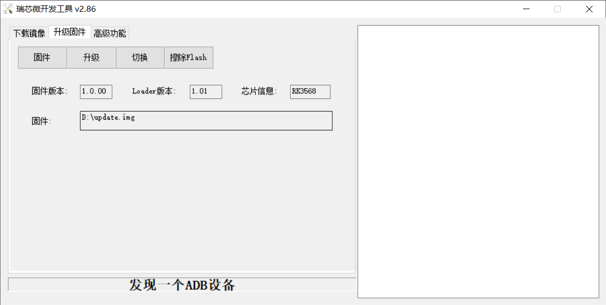
Click “Switch” and wait for a while to enter the LOADER device, then click “Erase Flash” to erase. Then click the “Upgrade” button to upgrade.

Note: After the upgrade is completed, the system will automatically reboot twice, the first reboot to update some information, the operating user is [root@buildroot], need to be patient, the second reboot can be used normally, the operating user is forlinx@ok3568:~$.
5.1.2.2 Factory Tool Flashing Test
FactoryTool is a factory batch OTG burning tool. It does not need to read the image and can do batch burning. In addition, it can burn some larger image files. If RKDevTool compatibility is not satisfied, you can try this method. Before using it, unzip it to a full English path, connect the development board and host computer with a Type-C cable, press and hold the recover button of the development board and don’t release it, then press the reset button to reset the system, and release the recover button after about two seconds. There will be prompts on the Rockchip development tool : loader device found
Note:
The condition for recognition is that the development board is powered up and the RECOVER key is in the pressed state;
Theoretically, the decompression directory is optional, but some users feedback that the decompression directory of Rockchip development tool should be in full English. If it is inconsistent with the following figure after opening the development tool, please consider decompressing it in the full English directory.

Click to select the firmware, and click to start. At this time to recognize the loader device will automatically start burning.

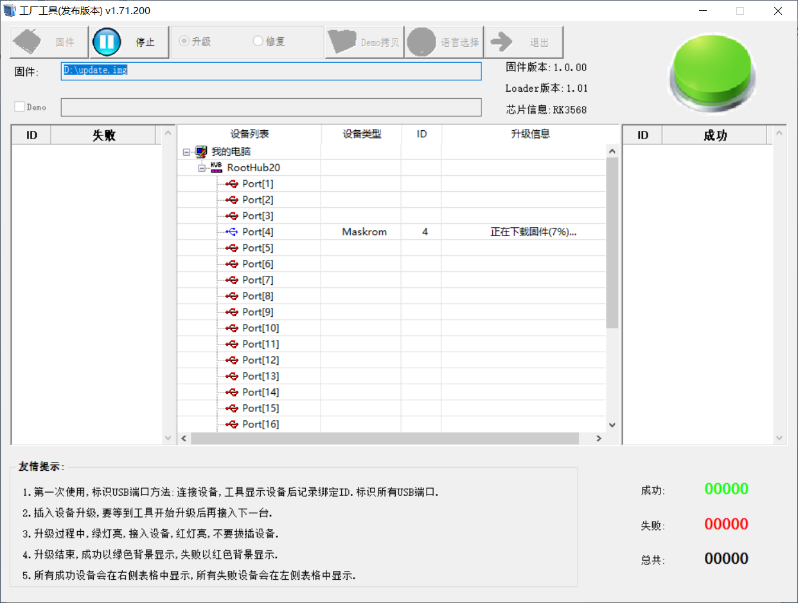
5.1.3 OTG Step-by-step Flashing Test
In the development phase, it is very time-consuming to burn all of them every time, so here is the method of using OTG burning tool to burn in separate partitions.
Note:
The condition for recognition is that the development board is powered up and the RECOVER key is in the pressed state;
First, after OK3568-Forlinx Desktop-release is compiled, a separate partition image can be found in the rockdev directory.

Take separate programming boot.img (including device tree and startup logo) as an example to demonstrate the programming method.
Use the Type-C cable to connect the development board to the host. Press and hold the recover key and do not release it. Then press the reset key to reset the system. Release the recover key after about two seconds. The system will prompt to discover the loader device.

Click the “Device Partition Table” button to automatically read the partition address. There will be a prompt that some partitions cannot be read. Click “OK”.

Click the right test area of the partition to select the partition mirror, and check the partition.

Click the “Execute” button to automatically flash and restart.

For other partitions detected on the right but not displayed in the left list and needing to be flashed, you need to right-click on the left and select “Add Item”, just enter the partition, then click “Read Partition Table” again, and the software will automatically assign the partition address.

Introduction to MASKROM mode
If Loader mode is inaccessible (loader problem, etc.), press and hold the BOOT key, then press the reset key to enter maskrom mode for burning.

At this time, the system will prompt the discovery of a maskrom device. The burning process is consistent with the loader mode, so it is best to use an update.img burning.
Note: Don’t click “Device Partition Table” in maskrom mode, it is invalid.